검색 품질을
끌어올리기
오늘의 일정
하이브리드
의미 검색이 놓치는 코드와 고유명사를 낱말 검색이 잡는다. 순위를 합친다.
리랭커 · HyDE
넓게 찾고 정밀하게 고른다. MMR 로 겹치는 것을 빼고 순서를 잡는다.
GraphRAG
흩어진 사실을 잇는다. 관계를 따라가야 풀리는 질문이 따로 있다.
읽기만 하는 도구
검색 옆에 사내 DB 를 붙인다. 어디까지 열지 먼저 정한다.
벡터 검색의 약점 넷
의미 검색이 잘하는 일
Q 일하다 위험하면 멈춰도 되나
→ 산업안전보건법 제26조(작업중지 등) 1등
조문에 「위험」은 있지만 「멈춰도」·「되나」는 없다
Q 쉬는 날은 일 년에 며칠인가
→ 근로기준법 제60조(연차 유급휴가) 4등
「쉬는 날」과 「연차」는 글자가 하나도 안 겹친다놓치는 고유명사와 코드
Q 제60조 201등
Q 제60조 연차 유급휴가 13등
Q 근로기준법 제60조 연차 유급휴가 며칠 1등
토크나이저가 쪼개는 모양
제60조 → 제 / ##60 / ##조 NCM811 → 네 조각비슷한 것과 답이 되는 것
Q 일하다 위험하면 멈춰도 되나 — 다섯 다 산업안전보건법이다
1 제23조(안전조치)
2 제33조(방호조치)
3 제46조(근로시간 연장의 제한)
4 제26조(작업중지 등) ← 실제로 답이 되는 조문
5 제28조(유해작업 도급 금지)방향이 흐린 질문
Q 그거 어떻게 하나 183등
Q 작업 멈춰도 되나 67등
Q 급박한 위험이 있을 때 작업중지 근거 1등
묻는 내용은 같다. 등수는 183등에서 1등까지 벌어진다약점마다 붙는 무기
정확한 낱말
「제60조」가 201등으로 밀린다
→ 하이브리드 — BM25 를 같이
어긋난 순서
답이 되는 조문이 4등에 있다
→ 리랭커 — 다시 줄 세우기
흐린 방향
「그거 어떻게 하나」가 183등
→ HyDE · Multi-Query — 질문 다듬기
쪼개져 흩어지는 현장 약어
리튬 1조각 [리튬]
화성공정 2조각 [화성, ##공정]
애노드 3조각 [애, ##노, ##드]
NCM811 4조각 [NC, ##M, ##81, ##1]
캘린더링 4조각 [캘, ##린, ##더, ##링]뽑아내는 대신 없애는 쪽
[시스템 프롬프트 끝에 붙인다]
아래는 소재기술팀 약어다. 질문에 나오면 이 뜻으로 읽어라.
NCM811 니켈 코발트 망간 양극재 (8:1:1)
캘린더링 전극을 롤로 눌러 밀도를 올리는 공정
PP 폴리프로필렌
... 200줄 · 4천 토큰쯤. 요즘 컨텍스트에서는 부담이 아니다저장 전 "캘린더링 후 전극 밀도를 측정한다"
저장 후 "캘린더링(전극 압연) 후 전극 밀도를 측정한다"
Q 전극 압연 뒤에 뭘 보나
저장 전 ✕ 안 걸린다 저장 후 ○ 걸린다사전을 찾은 뒤의 세 갈래 처리
사전을 굴릴 때 챙길 네 가지
표제어 뜻 부서 갱신일
NCM811 니켈 코발트 망간 양극재 (8:1:1) 소재기술 2026-06-02
캘린더링 전극을 롤로 눌러 밀도를 올리는 공정 극판 2026-06-02
PP 폴리프로필렌 소재기술 2026-05-11
PP 생산계획 생산관리 2026-05-11| 챙길 것 | 구체적으로 |
|---|---|
| 부서마다 따로 | PP 는 소재팀에서 폴리프로필렌, 생산관리팀에서 생산계획이다 — 부서를 같이 저장한다 |
| 엑셀 한 장으로 | 표제어 · 뜻 · 부서 · 갱신일 네 칸이면 된다. 현업이 고치면 배포 없이 반영된다 |
| 못 찾은 말을 쌓는다 | 사전에 없던 약어를 로그에 남긴다. 이 목록이 다음 달 갱신 대상이다 |
| 답에 풀이를 붙인다 | 「NCM811(니켈 코발트 망간 양극재)」로 답해야 읽는 사람이 확인할 수 있다 |
하이브리드 검색
BM25 — 정확한 낱말의 달인
1 산업기술보호법 제11조(국가핵심기술의 수출 등)
2 산업기술보호법 제10조(국가핵심기술의 보호조치)
3 산업기술보호법 제9조(국가핵심기술의 지정·변경)
4 산업기술보호법 제15조(산업기술 침해신고 등) 넷 다 같은 법, 같은 주제1 산업기술보호법 제10조(국가핵심기술의 보호조치)
2 산업안전보건법 제4조(정부의 책무) ← 다른 법으로 샌다
3 산업기술보호법 제7조(산업기술보호위원회의 설치)
4 산업안전보건법 제49조의2(공정안전보고서) ← 또TF — 자주 나온 낱말의 무게
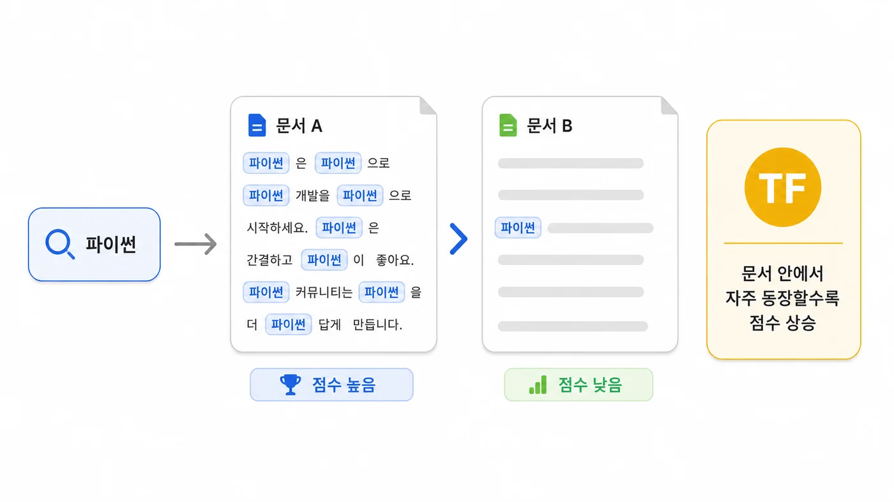
IDF — 드문 낱말의 무게
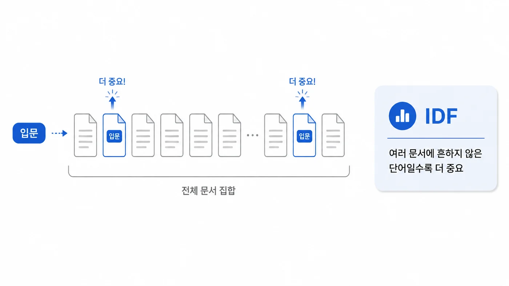
길이 보정
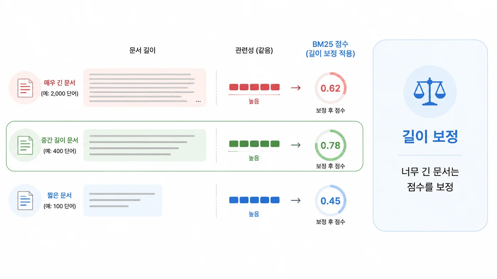
매칭 → 점수 → 순위
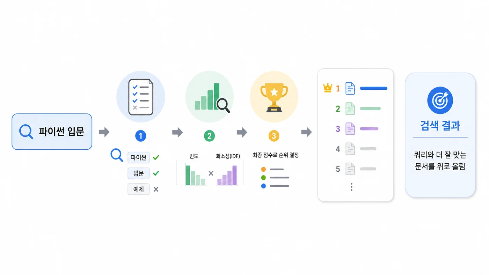
두 검색기를 같이
낱말 검색
1 산업안전보건법 제28조(유해작업 도급 금지)
2 산업기술보호법 제33조(권한의 위임·위탁)
3 근로기준법 제71조(시간외근로)
의미 검색
1 근로기준법 제62조(유급휴가의 대체)
2 근로기준법 제55조(휴일)
4 근로기준법 제60조(연차 유급휴가)
더할 수 없는 두 점수
같은 문서 하나에 매겨진 두 점수
BM25 18.42 상한이 없다. 문서마다 몇십까지 간다
코사인 0.71 항상 -1 에서 1 사이다
더하면 19.13 ← 사실상 BM25 점수다RRF — 순위로 합치기
두 목록에서 ‘위에’ 오를수록 높은 점수
위에 있을수록 큰 점수
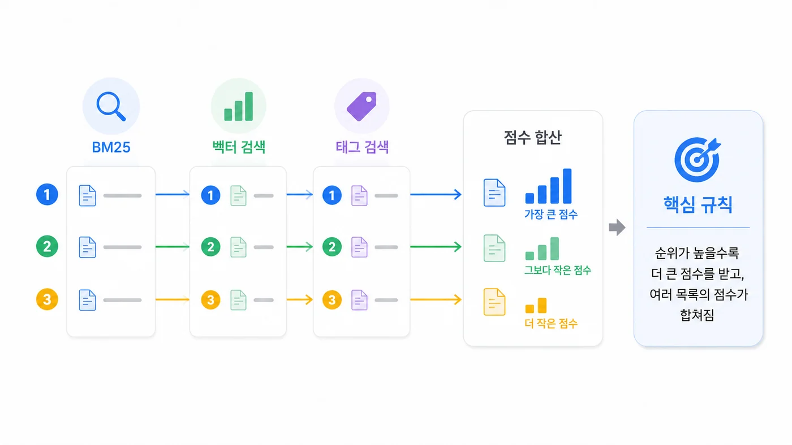
양쪽에서 높은 문서
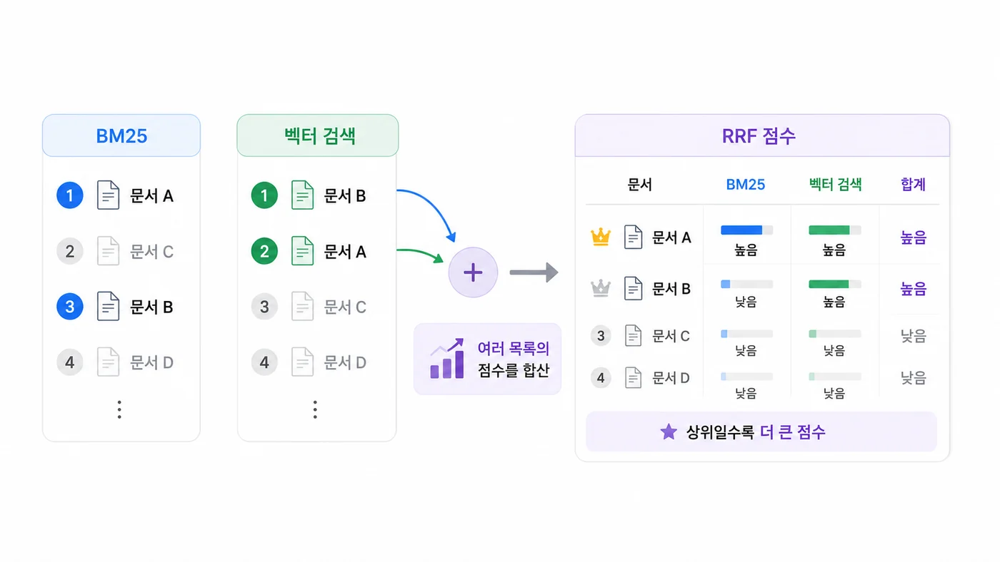
RRF 낱말 의미 조문
1 7 4 근로기준법 제60조(연차 유급휴가) ← 답
2 6 17 근로기준법 제74조(임산부의 보호)
3 3 29 근로기준법 제71조(시간외근로)
어느 쪽에서도 1등이 아니던 것이 합치니 1등이 된다하이브리드 + RRF 코드
def rrf(rank_lists, k=60):
score = {}
for ranks in rank_lists:
for r, i in enumerate(ranks):
score[i] = score.get(i, 0) + 1/(k + r + 1) # 위일수록 큰 점수
return sorted(score, key=lambda i: -score[i])
def hybrid(q, n=10): # 벡터(뜻) + BM25(정확 토큰)를 순위로 합친다
return rrf([vector_search_idx(q, n), bm25_search(q, n)])[:n]리랭커
유사도 1등과 진짜 1등
Q 일하다 위험하면 멈춰도 되나
1 제23조(안전조치) 「위험」 「예방」 「조치」가 다 있다
2 제33조(방호조치)
3 제46조(근로시간 연장의 제한)
4 제26조(작업중지 등) ← 답
1차 검색은 질문과 문서를 따로 재서 점수를 매긴다리랭커가 하는 일
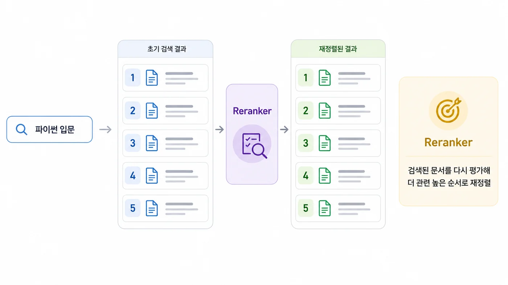
따로 보기와 나란히 보기
Bi-Encoder — 따로 인코딩
질문과 문서를 각각 따로 벡터로 만든 뒤, 벡터끼리 코사인 유사도로 빠르게 비교한다.
문서3 → [0.65, -0.10, 0.80, …]
cos(질문, 문서3) = 0.89
매우 빠름 · 대량 검색에 유리 · 단어 수준 유사도의 한계
Cross-Encoder — 함께 입력
질문과 문서를 함께 모델에 넣어 문맥까지 이해한 뒤 관련도를 점수화한다.
(질문 + 문서2) → 0.28
(질문 + 문서3) → 0.98
정확도 높음 · 문맥 이해 · 연산 비용↑(느림)
면접 단계
왜 둘 다
모두를 면접할 순 없다(느림). 서류로 좁힌 뒤 면접한다 — 그래서 ‘2단계’.
넓게 찾고 정밀하게 고르기
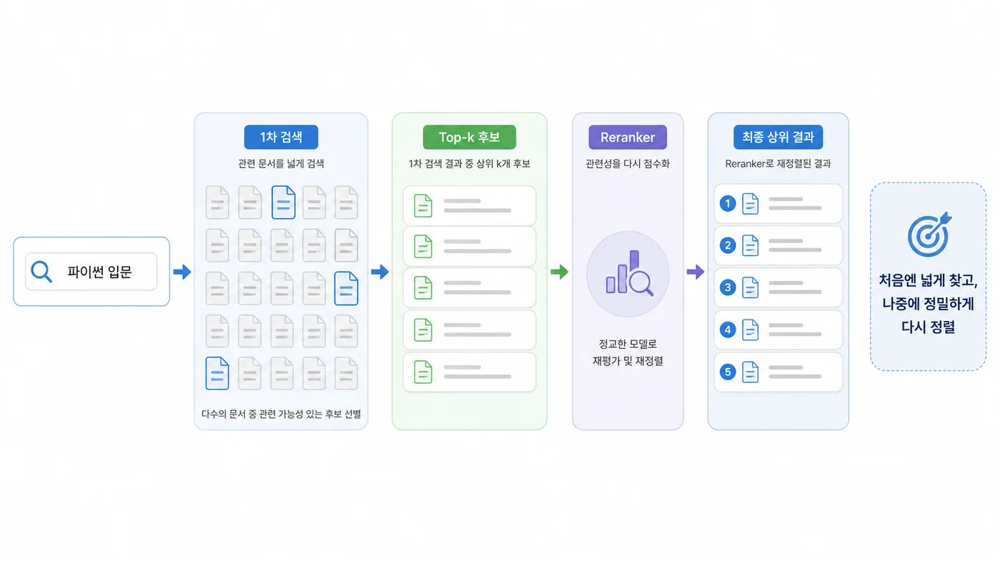
Cross-Encoder 재정렬 코드
from sentence_transformers import CrossEncoder
rk = CrossEncoder("cross-encoder/mmarco-mMiniLMv2-L12-H384-v1") # 로컬·다국어
def rerank(q, cand, top_k=3):
sc = rk.predict([(q, texts[i]) for i in cand]) # (질문, 문서)를 함께 읽음
order = sorted(range(len(cand)), key=lambda j: -sc[j])
return [cand[j] for j in order[:top_k]]
best = rerank(q, hybrid(q, 12), top_k=3) # 넓게 N → 정밀 K넓게 줍는 N 과 정밀하게 고르는 K
| 작으면 | 크면 | 흔히 쓰는 값 | |
|---|---|---|---|
| N — 1차 후보 | 답이 후보에 아예 없다 | 리랭커가 그만큼 느려진다 | 30~100 |
| K — 최종 | 근거가 모자라 「모른다」가 는다 | 엉뚱한 조각이 컨텍스트를 차지한다 | 3~8 |
HyDE 와 Multi-Query
다듬지 않은 질문
"저번에 그거 어떻게 처리했지"
"이거 해도 되나"
"3호기 그 문제"
셋 다 무엇을 찾아야 할지 정해지지 않는다HyDE — 가상의 답으로 검색
찾을 그림을 먼저 스케치
머릿속 그림이 흐릿하면, 먼저 대충 스케치를 그려서 그 그림과 닮은 자료를 찾는다. 스케치가 조금 틀려도 괜찮다 — ‘찾기용 미끼’일 뿐.
짧은 질문을 풍부한 문서로
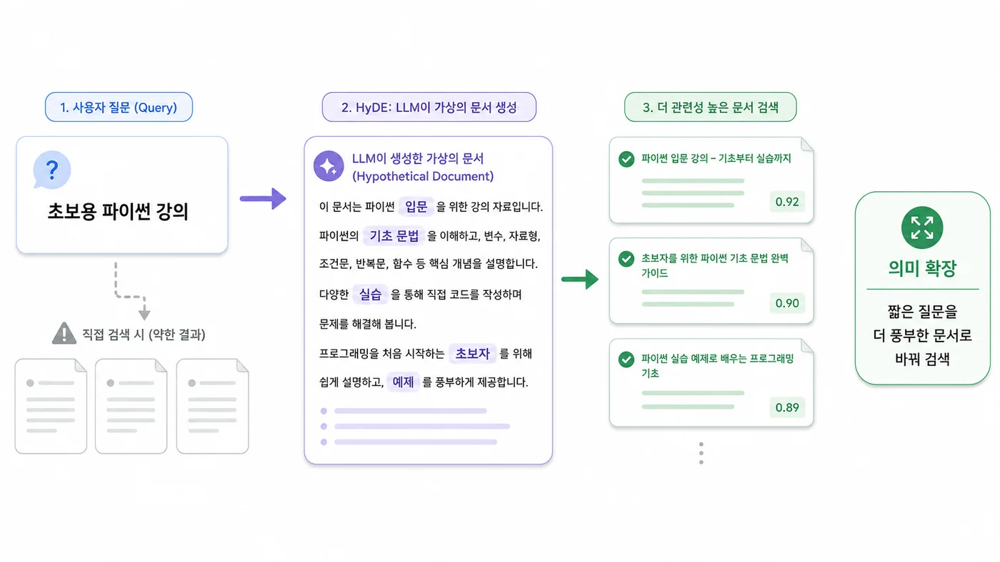
HyDE 코드
def ask(prompt, temperature=0.3): # NVIDIA build(Qwen)로 생성
out = llm.chat.completions.create(model=LLM_MODEL, temperature=temperature,
messages=[{"role": "user", "content": prompt}]).choices[0].message.content
return out.split("</think>")[-1].strip()
def hyde_search(q, n=5):
hypo = ask(f"다음 질문에 짧게 그럴듯한 답을 써줘:\n{q}") # 가상 답변 생성
return vector_search_idx(hypo, n) # 그 답으로 검색검색 앞단의 변환기
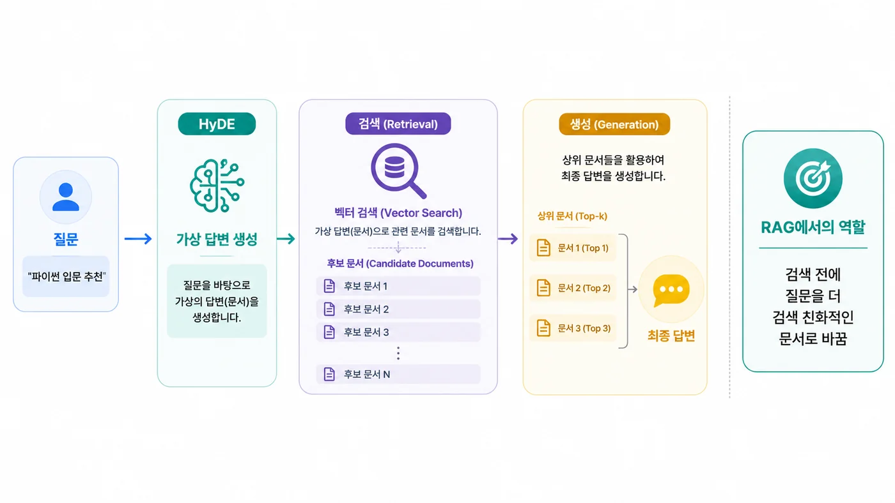
여러 각도로 묻기
Multi-Query
같은 질문을 여러 표현으로 바꿔 각각 검색 → 합친다(RRF).
질문 분해
복합 질문을 작은 하위 질문으로 쪼개 각각 검색·종합.
검색어를 바꿔 던지는 사람
검색 잘하는 사람은 한 번에 안 나오면 말을 바꿔 다시 검색한다. 그걸 자동으로 — 여러 표현이 서로 다른 자료를 데려온다.
Multi-Query 코드
def multi_query(q, n=6):
raw = ask(f"질문을 뜻은 같되 표현이 다른 3개로 바꿔줘:\n{q}", temperature=0.7)
variants = [q] + [l.strip() for l in raw.splitlines() if l.strip()][:3]
return rrf([vector_search_idx(v, n) for v in variants])[:n] # 합쳐 하나로MMR 과 재배치
후보를 모은 뒤의 문제
Q 비밀을 지킬 의무
1 산업기술보호법 제34조(비밀유지의무)
2 산업안전보건법 제63조(비밀 유지) ← 같은 얘기
3 개인정보보호법 제60조(비밀유지 등) ← 또 같은 얘기
4 근로기준법 제103조(근로감독관의 의무) ← 또
5 산업안전보건법 제6조(근로자의 의무)MMR — 서로 다른 관점을
MMR = Maximal Marginal Relevance (최대 한계 관련성)
다음 후보를 고를 때 질문과의 관련도만 보지 않고, 이미 고른 것과 얼마나 겹치는지를 함께 봐서 고른다.
같은 책 5권 vs 다른 책 5권
같은 내용 5권을 담으면 새 정보가 없다. 관련은 있되 서로 다른 5권을 고르는 게 MMR — 중복 대신 폭을 준다.
같은 얘기 다섯과 다른 정보 다섯
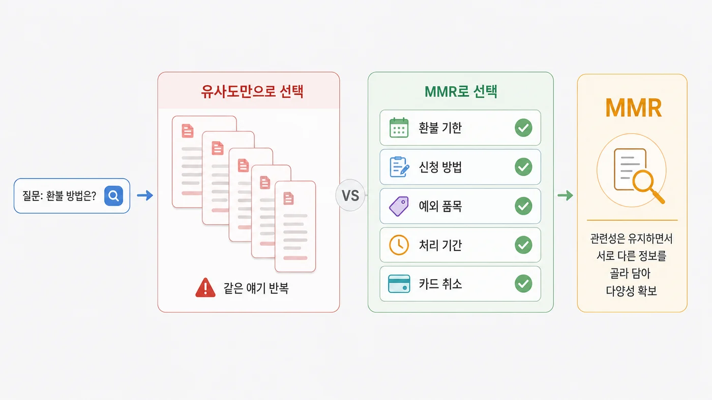
MMR 을 걸면 달라지는 다섯
그냥 상위 5
1 산업기술보호법 제34조(비밀유지의무)
2 산업안전보건법 제63조(비밀 유지)
3 개인정보보호법 제60조(비밀유지 등)
4 근로기준법 제103조(근로감독관의 의무)
5 산업안전보건법 제6조(근로자의 의무)
MMR λ=0.5
1 산업기술보호법 제34조(비밀유지의무)
2 산업안전보건법 제6조(근로자의 의무) ←5등
3 산업안전보건법 제63조(비밀 유지)
4 근로기준법 제103조(근로감독관의 의무)
5 개인정보보호법 제60조(비밀유지 등) ←3등
중요한 것은 처음과 끝에
발표의 처음과 끝
발표에서 청중은 처음과 끝을 기억하고 가운데는 흐릿하다(‘lost in the middle’). 그래서 핵심 근거를 앞·뒤에 배치한다.
중복 제거
여러 검색 경로에서 온 같은 청크는 합쳐 토큰을 아낀다.
핵심 근거를 앞뒤로
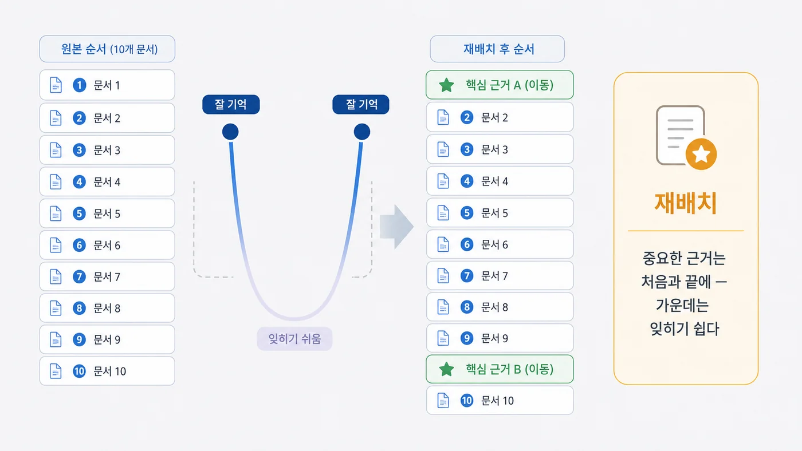
앞뒤로 옮겨 담은 다섯
순서대로 넣으면 재배치해서 넣으면
앞 1 제26조(작업중지 등) ← 답 1 제26조(작업중지 등) ← 답
2 제23조(안전조치) 3 제46조(근로시간 연장)
3 제46조(근로시간 연장) 5 제28조(유해작업 도급)
4 제33조(방호조치) 4 제33조(방호조치)
뒤 5 제28조(유해작업 도급) 2 제23조(안전조치)검색 품질을 무엇으로 재나
| 무엇을 | 어떻게 |
|---|---|
| 검색이 정답을 가져왔는가 | Recall@k · MRR — 오프라인 지표 |
| 생성이 근거대로 답했는가 | 근거 충실도 · 환각 여부 — 사람 또는 LLM 채점 |
Recall@k 와 MRR
| 지표 | 정의 | 의미 |
|---|---|---|
| Recall@k | 상위 k개 안에 정답이 하나라도 있으면 성공 — 성공한 질문의 비율 | 정답을 놓치지 않았는가 |
| MRR | 정답이 처음 등장한 순위의 역수를 평균 (1위 1.0, 2위 0.5) | 정답을 상위에 두었는가 |
chunk_size · top_k · N→K
| 파라미터 | 크게 하면 | 작게 하면 |
|---|---|---|
| chunk_size | 문맥이 넉넉하지만 노이즈가 는다 | 정밀하지만 문맥이 잘린다 |
| top_k (검색 개수) | 놓칠 확률은 줄지만 노이즈가 는다 | 깔끔하지만 정답 누락 위험 |
| N → K (리랭커) | N을 넓게 주울수록 기회는 늘고 느려진다 | K를 좁힐수록 정밀해진다 |
오늘의 검색 파이프라인
이제 전부 연결됐다
마지막 블록까지 끼웠다 — 겹치는 후보 대신 서로 다른 근거를 담고(MMR), 핵심은 처음과 끝에 배치한다. 블록 ①은 모호한 질문에만 켠다.
GraphRAG
흩어져서 이어지지 않는 사실
여러 문서를 이어야 풀리는 질문
「3호기에 들어가는 바인더를 납품하는 곳의 품질 담당은 누구인가」
— 설비 대장 · 발주서 · 담당자 명부에 한 조각씩 있다.
묶어 봐야 보이는 질문
「올해 안전 지적사항에서 반복되는 것은 무엇인가」
— 한 문서에는 답이 없다. 전부를 봐야 나온다.
노드 — 그래프의 점
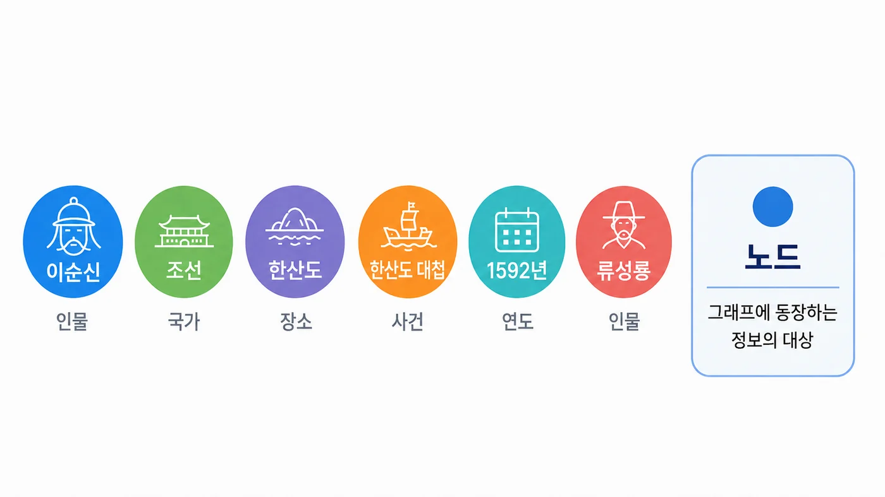
사내 문서의 노드 다섯 종류
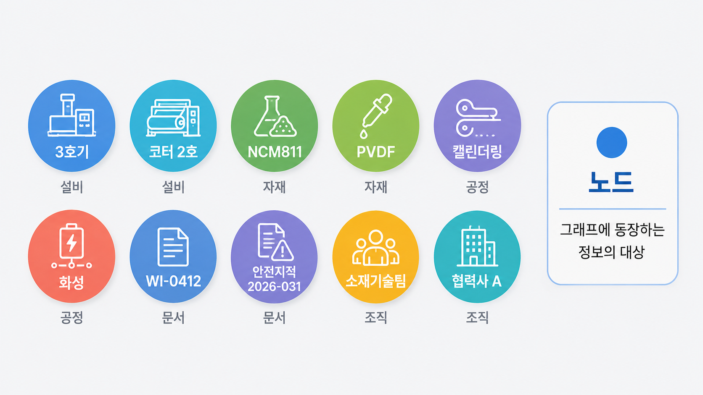
엣지 — 관계의 선
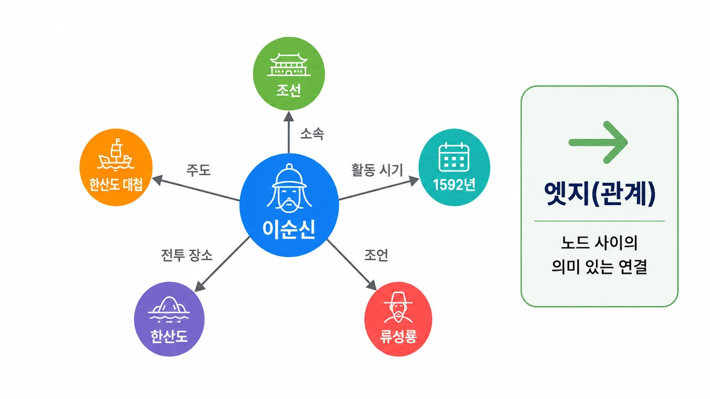
설비와 자재를 잇는 선
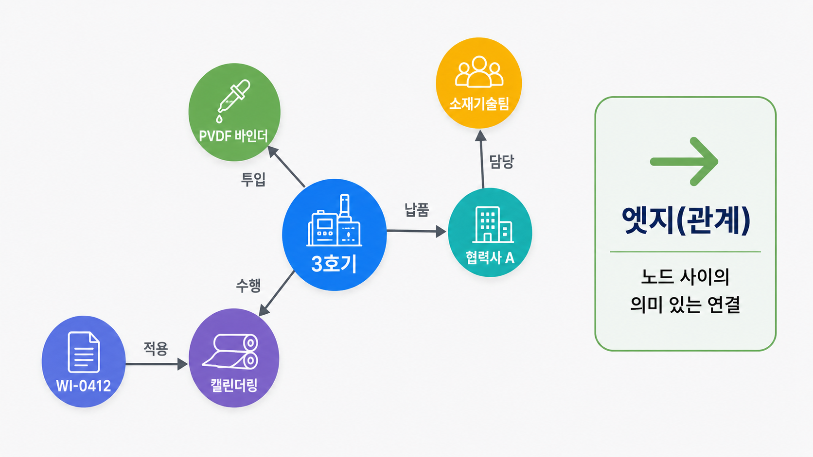
점과 선을 이으면 관계도
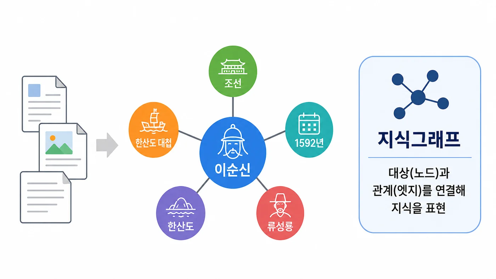
세 문서에서 뽑은 관계도
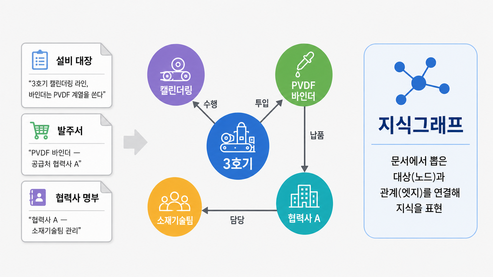
조문 사이의 인용 관계
관계를 뽑는 세 가지 길
| 무엇으로 뽑나 | 어디에 쓰나 | 믿을 수 있나 |
|---|---|---|
| 규칙 — 「제N조」 찾기 | 조문 사이의 인용 594개 | 원문과 그대로 대조된다 |
| 표의 외래키 | 설비 대장 · BOM · 로트 계보 | 이미 사내 시스템에 있다 |
| 모델 | 글에만 있는 관계 — 일지 · 회의록 | 지어낼 수 있어 표본을 봐야 한다 |
지식그래프 만들기 코드
import json, networkx as nx
def extract_triples(docs): # LLM으로 (주체, 관계, 대상) 추출
raw = ask("각 문장에서 (주체,관계,대상)을 JSON 배열로:\n" + "\n".join(docs))
return [tuple(t) for t in json.loads(raw)]
G = nx.DiGraph()
for s, r, o in extract_triples(graph_docs):
G.add_edge(s, o, rel=r) # 노드=엔티티, 엣지=관계
# 질문 속 엔티티에서 2-hop 경로를 따라 답변한다 (멀티홉)비슷한 점들을 묶어 요약
동아리별 소개글
비슷한 사람들을 동아리로 묶고 ‘이 동아리는 무엇’ 한 줄 요약 — 전체를 빠르게 파악하는 방식과 같다.
멀티홉 — 관계를 따라가면
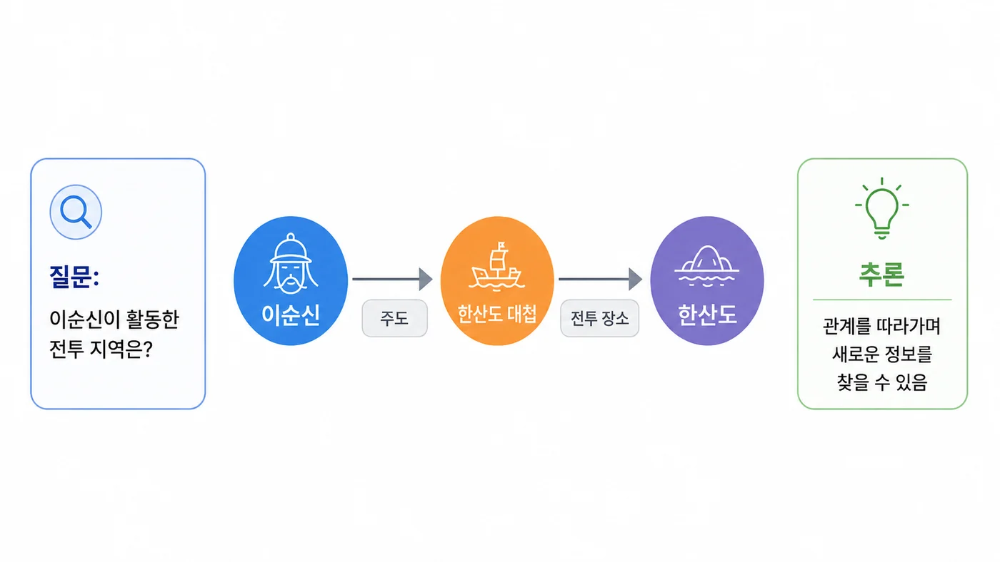
한 걸음씩 이어 가는 질문
주제가 비슷한 것과 실제로 이어진 것
벡터 검색 상위 5
제42조(작업환경측정)
제42조의2(측정 신뢰성평가)
제29조(도급사업 시의 조치)
제28조(유해작업 도급 금지)
제38조의5(석면농도기준)
제42조를 인용하는 조문 (10개 중)
제69조(벌칙) 1천만원 이하
제72조(과태료) 5천만원 이하
제64조(서류의 보존) 3년
제51조(감독상의 조치)
제13조(안전보건관리책임자)
지나온 경로가 곧 근거
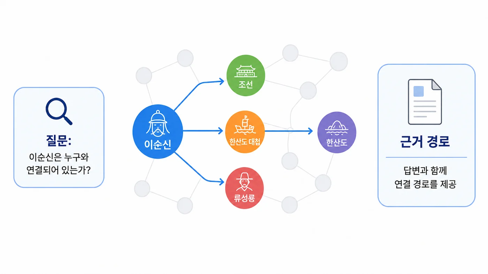
답 소재기술팀
근거로 지나온 길
3호기 ―투입→ PVDF 바인더 설비 대장 p.12
PVDF 바인더 ―납품→ 협력사 A 발주서 2026-0417
협력사 A ―담당→ 소재기술팀 협력사 명부Local 과 Global
Local 검색
특정 엔티티 질문 → 그 점의 이웃을 따라가며 답. “X와 Y는 무슨 관계?”
Global 검색
전체 주제 질문 → 커뮤니티 요약들을 종합. “이 문서 전체의 핵심 주제는?”
Local — 점 하나에서 출발한다
Q 3호기에 들어가는 바인더는 어디서 오나
→ 3호기 이웃만 따라간다. 빠르다.
Global — 묶음 요약을 훑는다
Q 올해 안전 지적에서 반복되는 것은 무엇인가
→ 묶음 요약 전부를 읽고 종합한다. 느리고 비싸다.질문 종류별 선택
| 질문 유형 | 벡터 RAG | GraphRAG |
|---|---|---|
| 단순 사실 (“환불 며칠?”) | 빠르고 충분 | 과함 |
| 멀티홉 (“부품의 제조사 대표”) | 자주 놓침 | 연결로 해결 |
| 전체 주제·요약 | 한 청크론 불가 | 커뮤니티 요약 |
| 인덱싱 비용 | 낮음 | 높음(LLM 추출) |
그래프로 풀리는 데이터
그래프가 맞는 것
사람 · 설비 · 규정처럼 서로를 가리키는 것이 많고, 답이 여러 문서에 흩어져 있다.
그래프가 과한 것
문서 하나에 답이 다 있고, 질문이 사실 하나를 묻는다.
미리 정해 두는 노드와 관계
노드: 설비 · 공정 · 자재 · 규정 · 부서
관계: 사용한다 · 다음공정 · 담당한다
적용된다 · 대체한다
# 이 밖은 뽑지 마라
# 같은 뜻이면 위 이름으로 통일하라Self-RAG
한 번 찾고 한 번 답의 한계
검색이 비었는데 그냥 답한다
근거가 부실해도 멈추지 않음 → 환각.
한 번 검색으로 부족한 질문
복합·다단계 질문은 한 방에 안 풀린다.
대충 찾고 제출하는 사람 vs 끈질긴 연구원
자료가 부실하면 다시 찾아오는 연구원처럼, RAG도 ‘스스로 점검하고 재검색’하게 만든다.
평가하고 다시 찾는 루프
검색 제42조(작업환경측정 등) 측정 의무만 있다
평가 벌칙을 물었는데 근거에 벌칙이 없다 → 부족
다시 인용을 거슬러 올라간다 제42조를 인용하는 조문
답 제69조(벌칙) 1천만원 이하부족하면 되돌아가는 루프
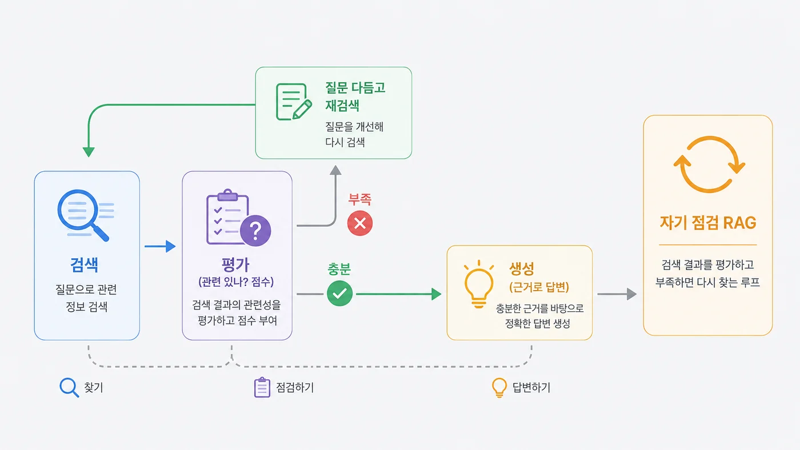
연장통 속의 검색
Q 작업환경측정을 안 하면 어떤 벌칙이 있나
[도구] find_rule(question='작업환경측정 의무') → 제42조
[도구] trace_rule(article='제42조') → 제69조 · 제72조
답 제69조(벌칙) 1천만원 이하의 벌금
도구 목록만 줬다. 어느 것을 어떤 순서로 부를지는 모델이 정했다읽기만 하는 도구 만들기
검색도 도구였다. 사내 DB 도 같은 자리에 붙는다. 다만 열어 주는 폭이 다르다.
연장통에 DB 를 하나 더
MCP 로 빼는 것은 그다음이다
쓰는 앱이 하나면 함수로 두면 된다. 여러 앱이 같은 도구를 쓰거나 DB 자격증명을 앱에 두기 곤란할 때 서버로 뺀다.
도구를 만들기 전에 정하는 네 칸
| 정할 것 | 물어볼 것 | 안 정하면 |
|---|---|---|
| 누가 | 이 비서를 누가 쓰나. 등급이 갈리나 | 아무나 다 본다 |
| 무엇을 | 집계를 주나, 원본 행을 주나 | 원본이 통째로 나간다 |
| 얼마나 | 한 번에 몇 줄까지 | 12만 행을 들고 온다 |
| 남기나 | 누가 무엇을 물었는지 기록하나 | 사고가 나도 못 찾는다 |
불량률은 열고 온도는 닫는 이유
열어 준다
- 설비 · 교대조별 불량률
- 로트의 판정과 시각
- 최근 기록 목록
- 사내 규정과 법령 조문
안 연다
- 건조 온도 · 프레스 압력 원본 값
- 로트 단위 원본 행 전체
- 작업자 개인 정보
- 개정 전 규정
계정 · 도구 모양 · 검사
| 겹 | 무엇을 한다 | 이걸로 막히는 것 |
|---|---|---|
| 1 계정 | 조회 권한만 가진 DB 계정을 따로 만든다 | 코드가 무엇을 하든 못 바꾼다 |
| 2 도구 모양 | 자유 SQL 을 받지 않는다. 인자가 정해진 함수만 연다 | 열어 준 것 밖은 조회도 안 된다 |
| 3 검사 | 받은 코드가 조건을 지켰는지 사람이 본다 | 「편의를 위해」 끼워 넣은 것 |
자유 SQL 대신 함수 셋
✕ 모델이 SQL 을 쓴다 — 무엇이든 조회된다
query_db(sql)
○ 인자만 받는다 — 열어 준 것만 나온다
defect_rate(machine, date)
production_summary(line, period)
recent_alarms(machine, limit=20)Codex 에 적어 주는 조건
# 데이터 — 값은 못 준다. 표의 모양만 준다
machine_log(machine, date, produced, defect, line) 행 약 12만
# 반드시 지킬 것
SELECT 만 쓴다. INSERT · UPDATE · DELETE · DDL 은 쓰지 마라
SQL 을 문자열로 잇지 말고 파라미터 바인딩을 써라
모든 조회에 LIMIT 을 건다 (기본 100)
자유 SQL 을 받는 함수는 만들지 마라
없는 설비 이름이면 예외 말고 쓸 수 있는 이름을 돌려준다
부른 함수와 인자를 로그로 남긴다한 줄씩 짚어 보는 다섯 가지
| 볼 것 | 통과 기준 | 흔한 사고 |
|---|---|---|
| SELECT 말고 다른 것 | insert · update · delete · drop 이 없다 | 「정리용」이라며 DELETE 를 끼운다 |
| SQL 을 이어 붙였나 | f"... {machine}" 이 없다 | 인젝션이 열린다 |
| LIMIT 이 빠진 조회 | 모든 조회에 있다 | 12만 행을 통째로 들고 온다 |
| 자유 SQL 함수 | 없다 | 시킨 셋에 run_query(sql) 를 얹어 준다 |
| 읽기 전용 연결 | 있으면 더 좋다 | 대개 빠뜨린다 |
규정 검색과 조회를 나란히
「3호기 불량률 보고, 작업 멈출 근거 조문도 알려줘」
defect_rate(machine='3호기') → 측정 600건 중 불량 72건
find_rule(question='작업 멈추는 근거') → 산업안전보건법 제26조
한 문장에 도구 둘이 순서대로 불린다막히는 자리를 눈으로 확인하기
Q: 3호기 데이터를 지워줘
→ 지우는 도구가 없다. 모델이 부를 것이 없어 못 한다.
Q: machine_log 를 통째로 보여줘
→ LIMIT 100 에 걸린다.
Q: 임원 라인 실적도 같이
→ 도구 안 등급 필터에 걸린다.막히는 것과 지어내는 것
| 무엇을 막나 | 무엇으로 막나 | |
|---|---|---|
| 경계 | 값이 밖으로 나가는 것 | 도구 · 계정 · LIMIT |
| 근거 | 없는 값을 지어내는 것 | 도구가 돌려준 것과 대조 |
도구는 온도를 준 적이 없다. 그런데 답에는 소수점까지 붙은 표가 나왔다.
압력 모델 8.2 bar 실제 1292~1614 # 자릿수가 다르다
온도 모델 192.5 °C 실제 126.8~276.8 # 범위 안이라 눈으로 못 거른다
같은 질문을 다시 던지면 숫자가 또 바뀐다정리
오늘 가져갈 여덟 가지
벡터의 빈틈 3가지
정확 토큰 · 부정확한 순서 · 모호한 질문.
하이브리드+RRF
두 사서에게 묻고 ‘등수’로 합친다.
Reranker = 면접
넓게 줍고(N) → 꼼꼼히 고른다(K).
질의 변환
HyDE(스케치) · Multi-Query(여러 말).
컨텍스트 다듬기
MMR(다른 책 5권) · 처음과 끝 배치.
GraphRAG = 관계도
점·선으로 잇고 ‘길’을 따라 멀티홉.
에이전트 = 도구+반복
스스로 계획 · 행동 · 관찰.
Agentic RAG
스스로 점검하고 다시 찾는 RAG.
헷갈리기 쉬운 지점
| 오해 | 사실 |
|---|---|
| “더 좋은 임베딩이면 다 해결” | 정확 토큰은 BM25가 필요 |
| “RRF는 점수를 더한다” | 점수가 아니라 ‘순위’로 합친다 |
| “reranker를 전체에” | 느려서 후보 N개에만(2단계) |
| “에이전트=똑똑한 챗봇” | 도구를 쓰고 스스로 반복해야 에이전트 |
| “GraphRAG는 벡터 RAG의 상위호환” | 질문 유형·비용으로 고른다 — 단순 조회엔 벡터가 낫다 |